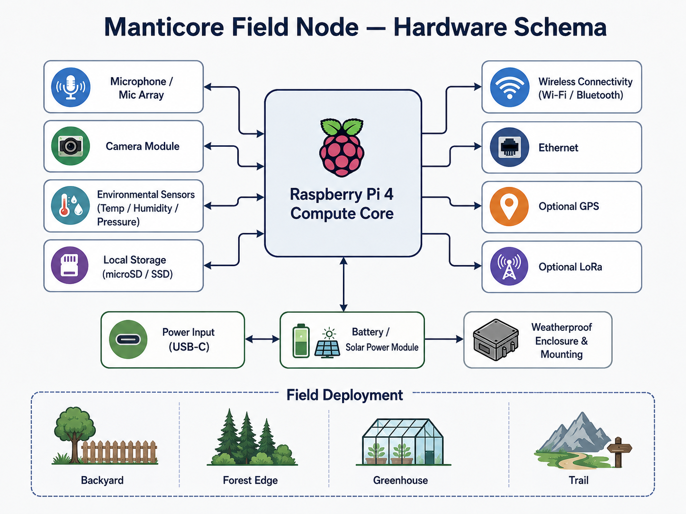
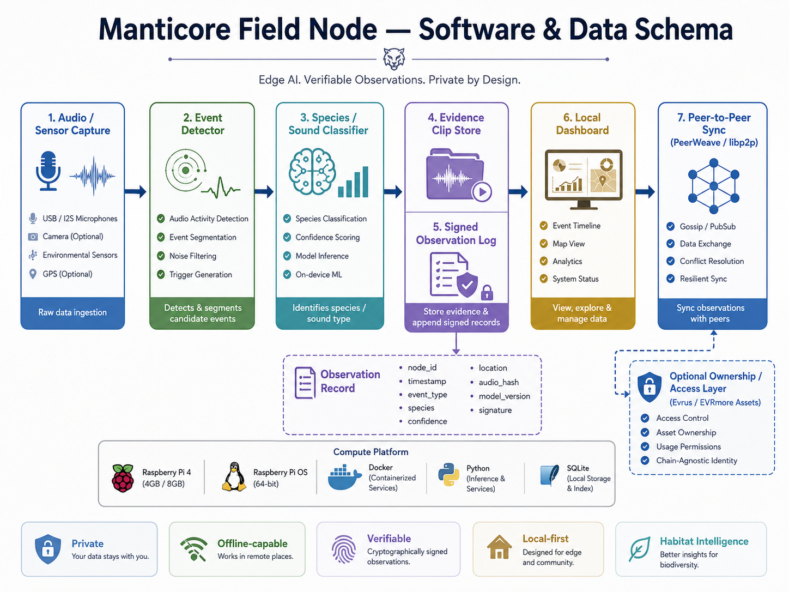

Install a Field Node
We help you site, mount, and power a node in your habitat. Local dashboard from day one. Your data stays on the device until you decide otherwise.
Start an installPrivate, local-first wildlife observation and habitat monitoring — or connect to our data services when you want a network.
3D product
Starting viewer…
The product
Mount a Manticore Field Node at the backyard edge, forest trail, greenhouse, or research plot. On-device AI watches, listens, and logs — without shipping your habitat to the cloud.

The service
Keep ownership of your observations. Sync peer-to-peer when you choose, or plug into Manticore data services for dashboards, aggregation, and habitat intelligence across sites.

Two ways in
Whether you place hardware in the wild or wire us into your stack, the outcome is the same: verifiable habitat intelligence you control.
We help you site, mount, and power a node in your habitat. Local dashboard from day one. Your data stays on the device until you decide otherwise.
Start an installConnect existing sensors or partner nodes to Manticore observation schemas, sync, and habitat analytics — without replacing the gear you already trust.
Plan an integrationLocal-first AI. Your habitat’s recordings and evidence stay with you.
Works where the trail has more trees than bars — sync when you can.
Cryptographically signed observations for science, stewardship, and partners.
Get started
Email lucas@manticore.email to install a Field Node or integrate data services. Include your site notes — or send a configuration from the 3D tuner above.